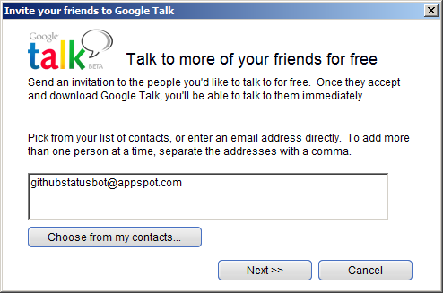
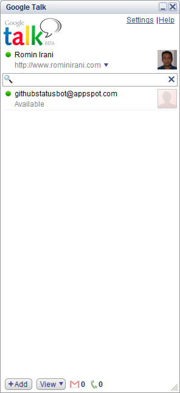
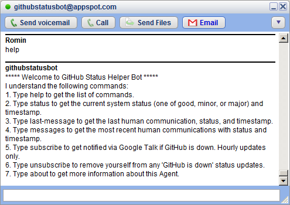
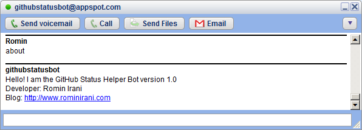
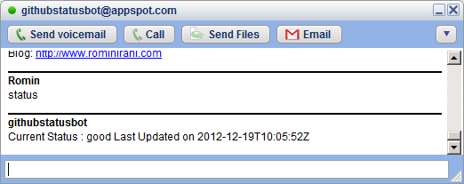
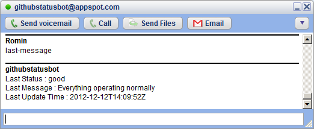
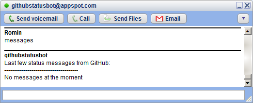
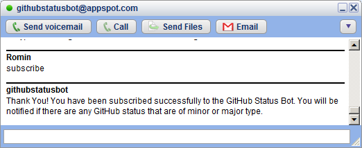
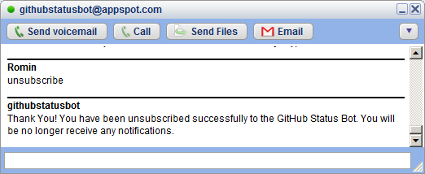
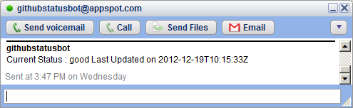

- Fire up Google Talk! and add githubstatus@appspot.com as a friend.

- Once I am added, understand the language I speak. It is not that complicated and I understand only 7 commands. All you have to do is type the command name and send it to me.
- help: Type this anytime to get a list of commands that I understand.
- about: In case you want to know who created me. In case you have some create ideas to create other bots, learn how to write one. We bots are very noble. May our tribe increase.
- status: Get the current system status (one of good, minor, or major) and timestamp.
- last-message: Get the last human communication, status, and timestamp.
- messages: Get the most recent human communications with status and timestamp.
- subscribe: I can notify you in case there are any major or minor status issues with the GitHub System. I will assume that you are online on your GTalk during that time.
- unsubscribe: To remove yourself from any IM notifications by me. This will remove you from getting notified in case there are any minor or major status issues with GitHub Sytstem.
- In case you have subscribed and there are status updates, you will be notified automatically via IM. A sample message is shown below: